Module 1, Practical 1¶
The practicals of the first teaching module are a refinement of those prepared by Luca Bianco. Many thanks for his help.
The aim of this practical is to set up a working Python3.x development environment and will start familiarizing a bit with Python.
Setting up the environment¶
We will need to install several pieces of software to get a working programming environment suitable for this practical. In this section we will install everything that we are going to need in the next few weeks.
Python3 is available for Windows, Linux and Mac, therefore you can run it on your preferred platform.
Note:
Altough for this course you will be fine with any operating system, my advice, if you are interested in pursuing a bioinformatics career, is to get familiar with Linux.
The following section explains how to install Linux on a windows machine. This is for your reference, you can read the following instructions before the next practical and try to instally Linux if you want to test it out.
Linux on windows¶
If your computer has Windows installed but you want to learn Linux you have several options to get it to run Linux:
You can install a virtualization software like vmware player and download the .iso image of a linux distribution like ubuntu. and install/run it from vmware player. For more information you can look at this tutorial. Another option is to install virtual box.
This video tutorial (only in Italian) shows you how to set up a usb stick to run Linux from it: https://youtu.be/8_SK8iEMyJk
Here you can find some VDI images that you can load in virtual box or in vmware player with several different operating systems including Linux distributions like Ubuntu, Debian, Centos, Fedora, etc. Please refer to this guide (for information on vmware please click on VM IMAGES –> VMware IMAGES in the menu of the page).
A dual boot system¶
You can also install Linux and Windows on the same machine and every time you boot your system up you can decide on which one of the two operating systems you want to use. Unlike the case described above in which Linux runs within Windows, in this case to switch from one operating system to the other you will always have to reboot the machine.
The installation of a dual boot system is easy, in principle, but there are a few things that you have to be careful on, like creating a partition of the hard disk on which you want to install Linux. If you make a mistake here you might end up losing Windows for example. My advice is to read carefully one of the following (or other guides) before attempting this:
Our toolbox¶
If you decide to work on Windows or Mac, you can safely skip the following information and go straight to the section “Installing Python3 in Windows/Mac”. Note that, regardless your operating system, a useful source of information on how to install python can be found here.
Installing Python3 in Linux¶
The Python interpreter. In this course we will use python version 3.x. A lot of information on python can be found on the python web page. Open a terminal and try typing in:
python3
if you get an error like “python3 command not found” you need to install it, while if you get something like this (note that the version might be different):

you are already sorted, just press Ctrl-D to exit.
Installation on a debian-like linux distribution (e.g. Ubuntu) can be done by typing the following commands on a terminal:
sudo apt-get update
sudo apt-get install python3
While if you are using Fedora you can use:
sudo dnf install python3
Install now the package manager pip, which is a very convenient tool to install python packages, with the following command (on Fedora, the command above should have already installed it):
sudo apt-get install python3-pipNote:
If pip is already installed in your system you will get a message like: python3-pip is already the newest version (3.x.y)
Finally, install the Integrated Development Environment (IDE) that we will be using. This is called Visual Studio Code and is available for all platforms. You can read about it here. Downloads for all platforms can be found here. On a debian-like distribution go to the folder where you downloaded the .deb package and type:
sudo dpkg -i code*.debWhile if you are using Fedora you can use:
sudo dnf install code*.rpm
Installing Python3 in Windows/Mac¶
Two options are available, please read them both CAREFULLY and then pick the one you are more comfortable with.
OPTION 1:¶
The python interpreter. In this course we will use python version 3.x. A lot of information on python can be found on the python web page. Installers for Windows and Mac can be downloaded from this page. Click on Download Python 3.8.x. PLEASE REFRAIN FROM DOUBLE-CLICKING ON THE INSTALLER LIKE THERE IS NO TOMORROW AND READ BELOW FIRST.
Attention! Important note
When executing the installer, please remember to tick the flag “Add Python 3.8.x to PATH” and then click on Install now (see picture below noting that the current version might differ from the picture).
OPTION 2 (easier):¶
Additional Information:
It is also possible to install python through the Anaconda package manager. You can install Visual Studio Code together with Anaconda(the Anaconda installer will ask if you want it, just say yes!).
Anaconda is available here
Upon launching the installer you should be prompted something like:
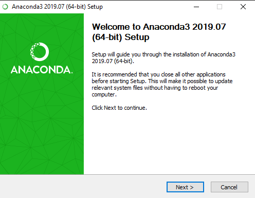at the next step flag the correct items as in the figure below (i.e. Flag Register Anaconda as my Default Python 3.x):
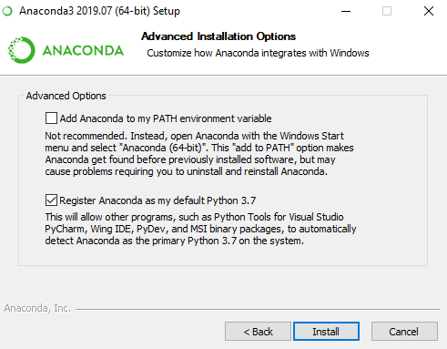When installation is complete, start anaconda through the Anaconda Navigator in the windows menu. When the navigator starts, you should see a screen similar to:
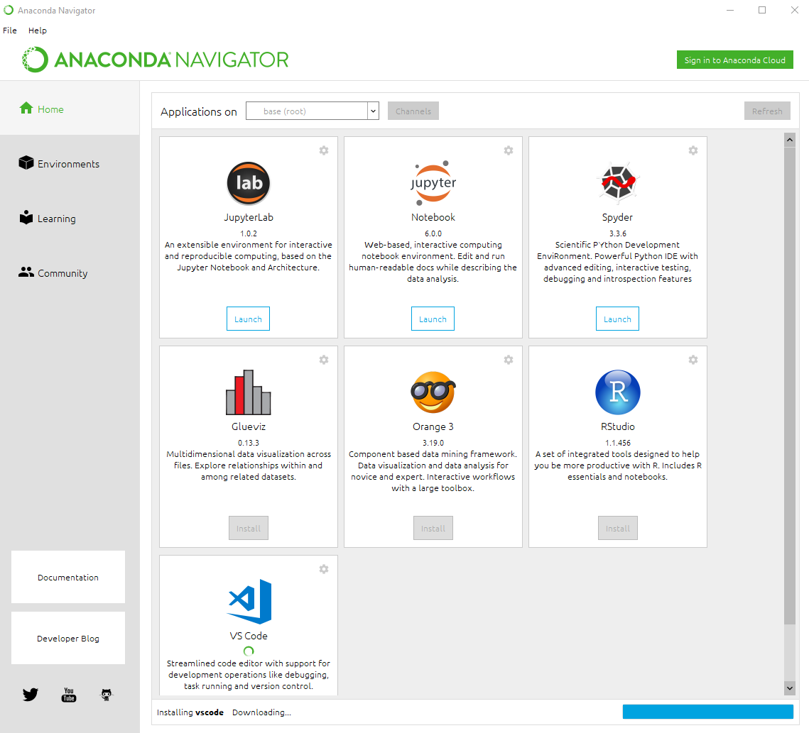from which you can install Visual Studio Code as IDE (by clicking on Install).
For more information please have a look here.
The console¶
To access the console on Linux just open a terminal and type:
python3
while in Windows you have to look for “Python” and run “Python 3.x”. The console should look like this:

Now we are all set to start interacting with the Python interpreter. In the console, type the following instructions (i.e. the first line and then press ENTER):
[1]:
5 + 3
[1]:
8
All as expected. The “In [1]” line is the input, while the “Out [1]” reports the output of the interpreter. Let’s challenge python with some other operations:
[2]:
12 / 5
[2]:
2.4
[3]:
1/133
[3]:
0.007518796992481203
[4]:
2**1000
[4]:
10715086071862673209484250490600018105614048117055336074437503883703510511249361224931983788156958581275946729175531468251871452856923140435984577574698574803934567774824230985421074605062371141877954182153046474983581941267398767559165543946077062914571196477686542167660429831652624386837205668069376
And some assignments:
[5]:
a = 10
b = 7
s = a + b
d = a / b
print("sum is:",s, " division is:",d)
sum is: 17 division is: 1.4285714285714286
In the first four lines, values have been assigned to variables through the = operator. In the last line, the print function is used to display the output. For the time being, we will skip all the details and just notice that the print function somehow managed to get text and variables in input and coherently merged them in an output text. Although quite useful in some occasions, the console is quite limited therefore you can close it for now. To exit press Ctrl-D or type exit() and press ENTER.
Visual Studio Code¶
Once you open the IDE Visual Studio Code you will see the welcome screen:
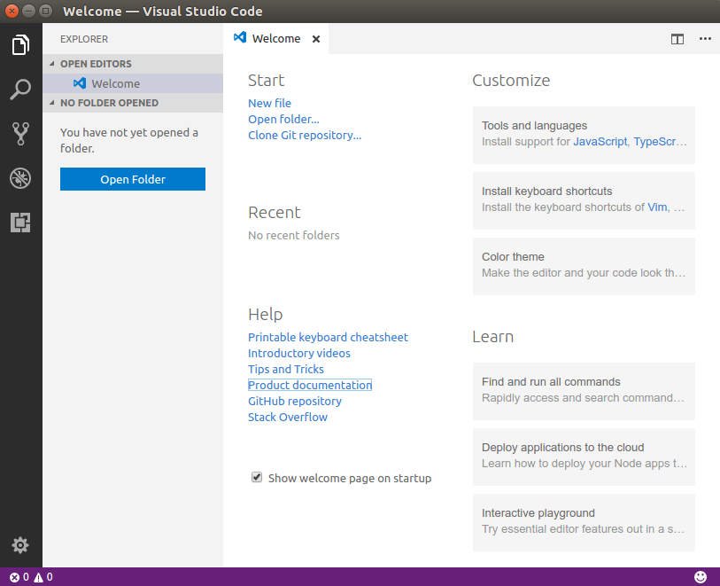You can find useful information on this tool here. Please spend some time having a look at that page. Once you are done with it you can close this window pressing on the “x”.
Attention! Important note
The following procedure is quite important and you will need to remember it to do the exams on the PCs of the lab.
The first thing to do is to set the python interpreter to use. Click on View –> Command Palette and type “Python” in the text search space. Select Python: Select Workspace Interpreter as shown in the picture below.
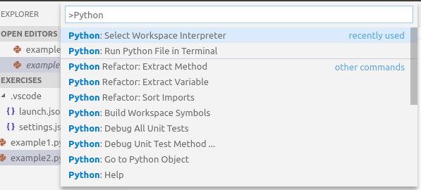Finally, select the python version you want to use (e.g. Python3.x).
Now you can click on Open Folder to create a new folder to place all the scripts you are going to create. You can call it something like “exercises”. Next you can create a new file, example1.py (as you might have guessed the .py extension stands for python).
Visual Studio Code will understand that you are writing Python code and will help you writing valid syntax in your scripts.
Warning:
If you get the following error message:
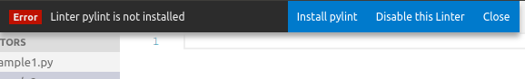click on Install Pylint which is a useful tool to help your coding experience.
Add the following text to your example1.py file.
[6]:
"""
This is the first example of Python script.
"""
a = 10 # variable a
b = 33 # variable b
c = a / b # variable c holds the ratio
# Let's print the result to screen.
print("a:", a, " b:", b, " a/b=", c)
a: 10 b: 33 a/b= 0.30303030303030304
A couple of things worth nothing: the first three lines opened and closed by “”” are some text describing the content of the script. Moreover, comments are proceeded by the hash key (#) and they are just ignored by the python interpreter.
Note
Good Pythonic code follows some syntactic rules on how to write things, naming conventions etc. The IDE will help you writing pythonic code even though we will not enforce this too much in this course. If you are interested in getting more details on this, you can have a look at the PEP8 Python Style Guide (Python Enanchement Proposals - index 8).
Warning
Please remember to comment your code, as it helps readability and will make your life easier when you have to modify or just understand the code you wrote some time in the past.
Please notice that Visual Studio Code will help you writing your Python scripts. For example, when you start writing the print line it will complete the code for you (if the Pylint extension mentioned above is installed), suggesting the functions that match the letters typed in. This useful feature is called code completion and, alongside suggesting possible matches, it also visualizes a description of the function and parameters it needs. Here is an example:
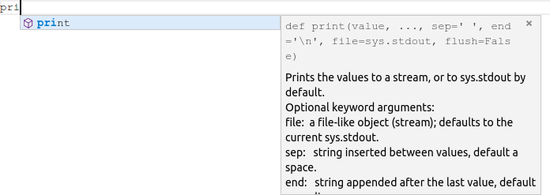Save the file (Ctrl+S as shortcut). It is convenient to ask the IDE to highlight potential syntactic problems found in the code. You can toggle this function on/off by clicking on View –> Problems. The Problems panel should look like this

Visual Studio Code is warning us that the variable names a,b,c at lines 4,5,6 do not follow Python naming conventions for constants (do you understand why? Check here to find the answer). This warning is because they have been defined at the top level (there is no structure to our script yet) and therefore are interpreted as constants. The naming convention for constants states that they should be in capital letters. To amend the code, you can just replace all the names with the corresponding capitalized name (i.e. A,B,C). If you do that, and you save the file again (Ctrl+S), you will see all these problems disappearing as well as the green underlining of the variable names. If your code does not have an empty line before the end, you might get another warning “Final new line missing”.
Info
Note that these were just warnings and the interpreter in this case will happily and correctly execute the code anyway, but it is always good practice to understand what the warnings are telling us before deciding to ignore them! Please, note also that these warnings could be not dispalyed with some versions of python and Visual Studio Code.
Had we by mistake mispelled the print function name (something that should not happen with the code completion tool that suggests functions names!) writing printt (note the double t), upon saving the file, the IDE would have underlined in red the function name and flagged it up as a problem.

This is because the builtin function printt does not exist and the python interpreter does not know what to do when it reads it. Note that printt is actually underlined in red, meaning that there is an error which will cause the interpreter to stop the execution with a failure. Please remember ALL ERRORS MUST BE FIXED before running any piece of code.
Now it is time to execute the code. By right-clicking in the code panel and selecting Run Python File in Terminal (see picture below) you can execute the code you have just written.
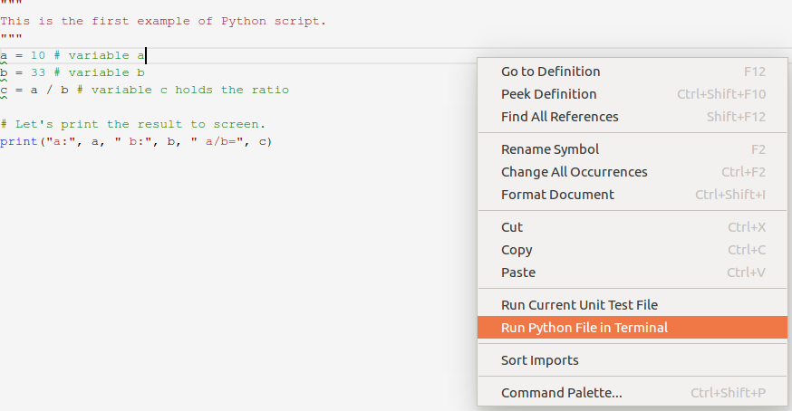Upon clicking on Run Python File in Terminal a terminal panel should pop up in the lower section of the coding panel and the result shown above should be reported.
Saving script files like the example1.py above is also handy because they can be invoked several times (later on we will learn how to get inputs from the command line to make them more useful…). To do so, you just need to call the python intepreter passing the script file as parameter. From the folder containing the example1.py script:
python3 example1.py
will in fact return:
a: 10 b: 33 a/b= 0.30303030303030304
Info: syntactic vs semantic errors
Before ending this section, let me add another note on errors. The IDE will diligently point you out syntactic warnings and errors (i.e. errors/warnings concerning the structure of the written code like name of functions, number and type of parameters, etc.) but it will not detect semantic or runtime errors (i.e. connected to the meaning of your code or to the value of your variables). These sort of errors will most probably make your code crash or may result in unexpected results/behaviours. In the next section we will introduce the debugger, which is a useful tool to help detecting these errors.
Before getting into that, consider the following lines of code (do not focus on the import line, this is only to load the mathematics module and use its method sqrt to compute the square root of its parameter):
[7]:
"""
Runtime error example, compute square root of numbers
"""
import math
A = 16
B = math.sqrt(A)
C = 5*B
print("A:", A, " B:", B, " C:", C)
D = math.sqrt(A-C) # whoops, A-C is now -4!!!
print(D)
A: 16 B: 4.0 C: 20.0
---------------------------------------------------------------------------
ValueError Traceback (most recent call last)
<ipython-input-7-5d4ed1b10924> in <module>
9 print("A:", A, " B:", B, " C:", C)
10
---> 11 D = math.sqrt(A-C) # whoops, A-C is now -4!!!
12 print(D)
ValueError: math domain error
If you add that code to a python file (e.g. sqrt_example.py), you save it and you try to execute it, you should get an error message as reported above. You can see that the interpreter has happily printed off the vaule of A,B and C but then stumbled into an error at line 9 (math domain error) when trying to compute \(\sqrt{A-C} = \sqrt{-4}\), because the sqrt method of the math module cannot be applied to negative values (i.e. it works in the domain of real numbers).
Please take some time to familiarize with Visual Studio Code (creating files, saving files etc.) as in the next practicals we will take this ability for granted.
The debugger¶
Another important feature of advanced Integrated Development Environments (IDEs) is their debugging capabilities. Visual Studio Code comes with a debugging tool that can help you trace the execution of your code and understand where possible errors hide.
Note
Please note that the following part of the guide presents a set of commands that could be different from the ones of the most updated versions of Visual Studio Code. For example, in my current version of the editor the debugger can be launched with Run –> Start Debugging (shortcut F5). Before doing this, you should add a breakpoint to the code with Run –> Toggle Breakpoint (shortcut F9).
Write the following code on a new file (let’s call it integer_sum.py) and execute it to get the result.
[1]:
""" integer_sum.py is a script to
compute the sum of the first 1200 integers. """
S = 0
for i in range(0, 1201):
S = S + i
print("The sum of the first 1200 integers is: ", S)
The sum of the first 1200 integers is: 720600
Without getting into too many details, the code you just wrote starts initializing a variable S to zero, and then loops from 0 to 1200 assigning each time the value to a variable i, accumulating the sum of S + i in the variable S.
A final thing to notice is indentation.
Info
In Python it is important to indent the code properly as this provides the right scope for variables (e.g. see that the line S = S + 1 starts more to the right than the previous and following line – this is because it is inside the for loop). You do not have to worry about this for the time being, we will get to this in a later practical…
How does this code work? How does the value of S and i change as the code is executed? These are questions that can be answered by the debugger.
To start the debugger, click on Debug –> Start Debugging (shortcut F5). The following small panel should pop up:
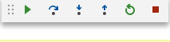We will use it shortly, but before that, let’s focus on what we want to track. On the left hand side of the main panel, a Watch panel appeared. This is where we need to add the things we want to monitor as the execution of the program goes. With respect to the code written above, we are interested in keeping an eye on the variables S, i and also of the expression S+i (that will give us the value of S of the next iteration). Add these three expressions in the watch panel (click on + to add new expressions). The watch panel should look like this:

do not worry about the message “name X is not defined”, this is normal as no execution has taken place yet and the interpreter still does not know the value of these expressions.
The final thing before starting to debug is to set some breakpoints, places where the execution will stop so that we can check the value of the watched expressions. This can be done by hovering with the mouse on the left of the line number. A small reddish dot should appear, place the mouse over the correct line (e.g. the line corresponding to S = S + 1 and click to add the breakpoint (a red dot should appear once you click).

Now we are ready to start debugging the code. Click on the green triangle on the small debug panel and you will see that the yellow arrow moved to the breakpoint and that the watch panel updated the value of all our expressions.

The value of all expressions is zero because the debugger stopped before executing the code specified at the breakpoint line (recall that S is initialized to 0 and that i will range from 0 to 1200). If you click again on the green arrow, execution will continue until the next breakpoint (we are in a for loop, so this will be again the same line - trust me for the time being).
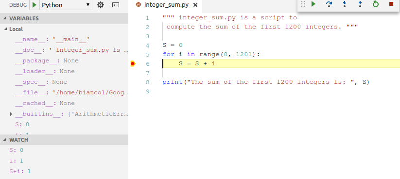Now i has been increased to 1, S is still 0 (remember that the execution stopped before executing the code at the breakpoint) and therefore S + i is now 1. Click one more time on the green arrow and values should update accordingly (i.e. S to 1, i to 2 and S + i to 3), another round of execution should update S to 3, i to 3 and S + i to 6. Got how this works? Variable i is increased by one each time, while S increases by i. You can go on for a few more iterations and see if this makes any sense to you, once you are done with debugging you can stop the execution by pressing the red square on the small debug panel.
Note
The debugger is very useful to understand what your program does. Please spend some time to understand how this works as being able to run the debugger properly is a good help to identify and solve semantic errors of your code.
Other editors are available, if you already have your favourite one you can stick to it. Some examples are:
Jupyter Notebook. Note: we might use it later on in the course.
A quick Jupyter primer (just for your information, skip if not interested)¶
Jupyter allows to write notebooks organized in cells (these can be saved in files with .ipynb extension). Notebooks contain both the code, some text describing the code and the output of the code execution, they are quite useful to produce some quick reports on data analysis. where there is both code, output of running that code and text. The code by default is Python, but can also support other languages like R). The text is formatted using the Markdown language - see cheatsheet for its details. Jupyter is becoming the de-facto standard for writing technical documentation.
Installation¶
To install it (if you have not installed python with Anaconda otherwise you should have it already):
python3 -m pip install jupyter
you can find more information here
Upon successful installation, you can run it with:
jupyter-notebook
This should fire up a browser on a page where you can start creating your notebooks or modifying existing ones. To create a new notebook you simply click on New:
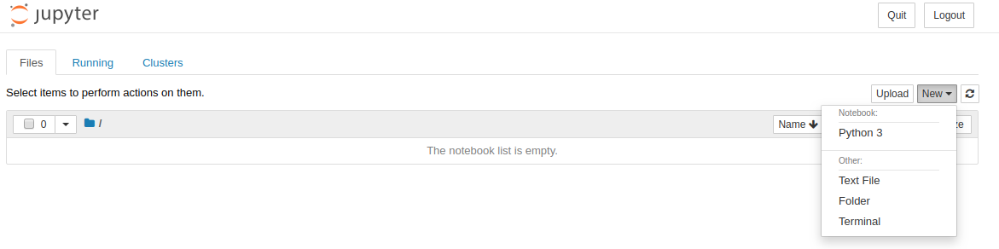and then you can start adding cells (i.e. containers of code and text). The type of each cell is specified by selecting the cell and selecting the right type in the dropdown list:
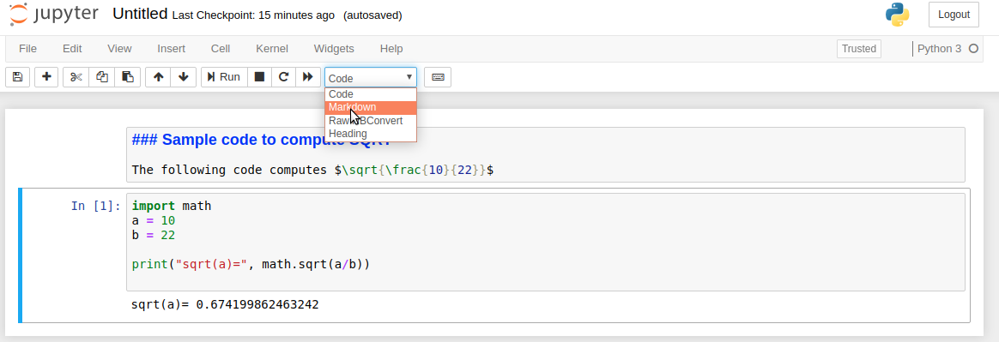Cells can be executed by clicking on the Run button. This will get the code to execute (and output to be written) and text to be processed to provide the final page layout. To go back to the edit mode, just double click on an executed cell.
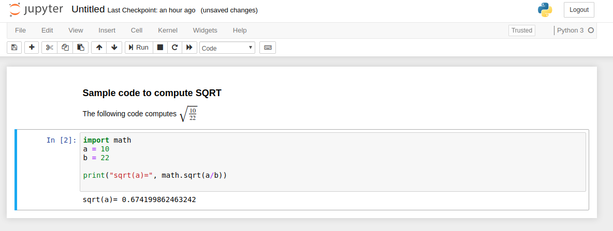Please take some more time to familiarize with Visual Studio Code (creating files, saving files, interacting with the debugger etc.) as in the next practicals we will take this ability for granted. Once you are done you can move on and do the following exercises.
Exercises¶
The size of the Sars-Cov-2 genome is 29,811 base pairs. 8,903 of these bases are adenines. Write some python code to compute the percentage of the genome that is an adenine and print it.
Show/Hide Solution
Compute the area of a triangle having base 120 units (B) and height 33 (H). Assign the result to a variable named area and print it.
Show/Hide Solution
Compute the area of a square having side (S) equal to 145 units. Assign the result to a variable named area and print it.
Show/Hide Solution
Modify the program at point 2. to acquire the side S from the user at runtime. Hint: use the input function (details here) and remember to convert the acquired value into an int.
Show/Hide Solution
If you have not done so already, put the two previous scripts in two separate files (e.g. triangle_area.py and square_area.py and execute them from the terminal).
Write a small script (trapezoid.py) that computes the area of a trapezoid having major base (MB) equal to 30 units, minor base (mb) equal to 12 and height (H) equal to 17. Print the resulting area. Try executing the script from inside Visual Studio Code and from the terminal.
Show/Hide Solution
Rewrite the example of the sum of the first 1200 integers by using the following equation: \(\sum\limits_{i=1}^n i = \frac{n (n+1)}{2}\).
Show/Hide Solution
Modify the program at point 6. to make it acquire the number of integers to sum N from the user at runtime.
Show/Hide Solution
Write a small script to compute the length of the hypotenuse (c) of a right triangle having sides a=133 and b=72 units (see picture below). Hint: remember the Pythagorean theorem and use math.sqrt).

Show/Hide Solution
Rewrite the trapezoid script making it compute the area of the trapezoid starting from the major base (MB), minor base (mb) and height (H) taken in input. (Hint: use the input function and remember to convert the acquired value into an int).
Show/Hide Solution
Write a script that reads the side of an hexagon in input and computes its perimeter and area printing them to the screen. Hint: \(Area = \frac{3*\sqrt{3}*side^{2}}{2}\)
Show/Hide Solution